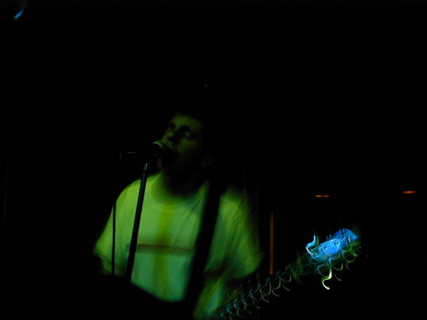
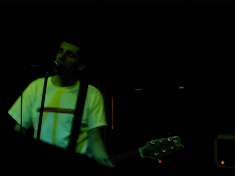
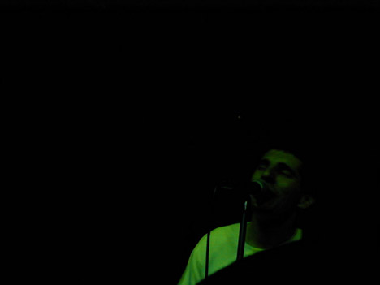
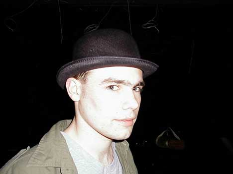
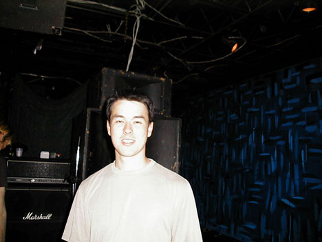
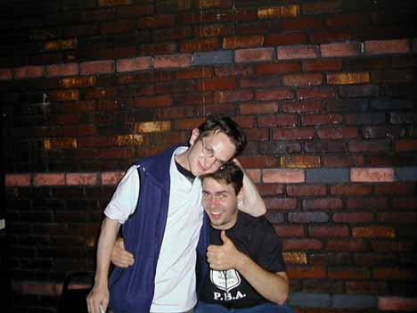

Big Orange Crayonmusical thingsTrouser, Tragic Drive, a band whose name I can't remember, and One Line Drawing at Valentine's May 16, 2000 There are pictures at the bottom! This was one of those shows where I was absolutely stunned and reminded of how great going to shows can be. Really. It was my first time going to a downstairs (read: where the bar is and it's 18+) show at Valentine's, too. New things are always good, right? The first band to play was Trouser. They're from around here and I think they were called One Leg Greg the last time I saw them. I think they've gotten bunches tighter and I think I'll start actively searching for more times to see them. Yay for kick ass local bands! They're sort of punk-poppy, but without the whole "I'll just play power chords and write songs named after girls" thing. The next band was Tragic Drive, who are touring with One Line Drawing. They were very emo, but I liked them anyway. I don't know, maybe they sang too much in harmony to be called emo. I listened to some of their MP3s before going, and wasn't all that excited from what I heard, but their live show is much more energetic and fun that the recordings suggest. Their guitar player is very tall and he played with his face during one song. Heehee. Things got a little weird with the third band, whose name I can't remember. They're another emo band, definitely very emo, from Buffalo. Because the show was downstairs, there was another show going on upstairs and the upstairs shows usually take precedence in terems of how loud they can be. The guy who runs the club made them stop in the middle of their first song because they were being too loud, which was pretty lame. I think they could have been quiter, though and when they were doing their checks, the guy told them it was too loud and asked them to bring the volume down, but they didn't so it wasn't like the guy was just being a jerk. Ah well. I kinda liked them, too, but I liked the other bands better. And then Jonah came on. This was my first time seeing One Line Drawing (the band is just him), and I was absolutely mesmerized by him. Really, if he goes through your town you should check him out. He plays pretty straight forward indie rock and it's just absolutely beautiful. He has a pretty charming personality, too. Heh, I'm totally at a loss for words to describe how good it was without sounding silly, so I'll sound silly. He put on one of those performances where even though I had never listened to him before, I felt like I have known those songs for a very long time and I was just being reminded of how great they are. I'm totally obsessed now. I wish I had more money on me, or I would have bought all of his stuff that he was selling, but I just got a t-shirt, and I'm going to buy his music mailorder. I'm just like "wow" and I don't know what else to say. A weird thing: why is it that the creepiest people at shows always stand next to me? When Jonah was playing there was this girl who came up and started shouting the names of classic rock bands and songs. Jonah was totally confused by it, and I think pretty much every one else was, too. Was she requesting those songs? Was she saying that he reminded her of them (not likely)? Was she just drunk? Who knows? Then, some 40 year old woman came up and started doing that excrutiating "40 year old drunk lady dance". I just don't get it. Anyway, Jonah was so good that I didn't care. I took pictures, too!  Jonah rocks it hardcore  Jonah again  Another!  Matt takes a flash in the face before the show. I made him wear the hat.  Mark meets the same fate as Matt. He just got down from fixing the lights, so I figured that I should take the picture while he was already blinded. Poor kid. =)  The Orange representin'! |